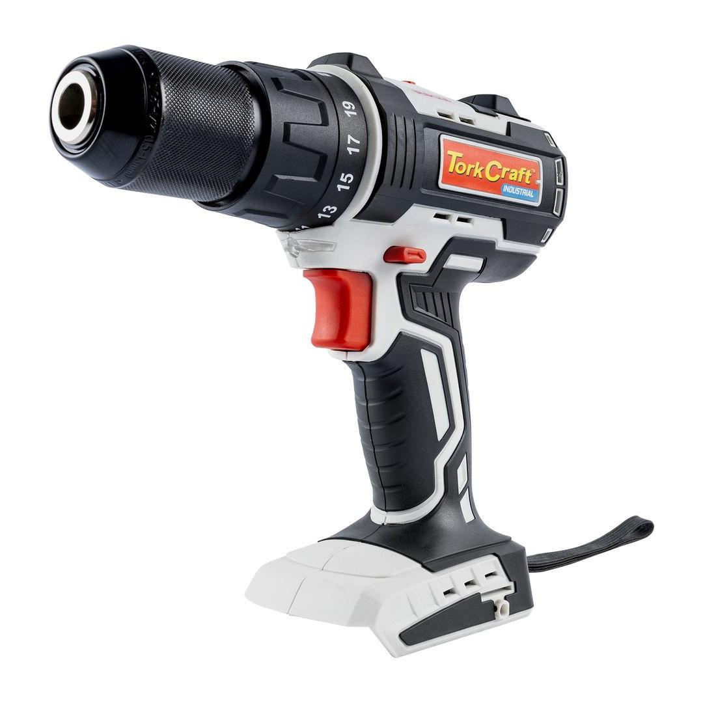
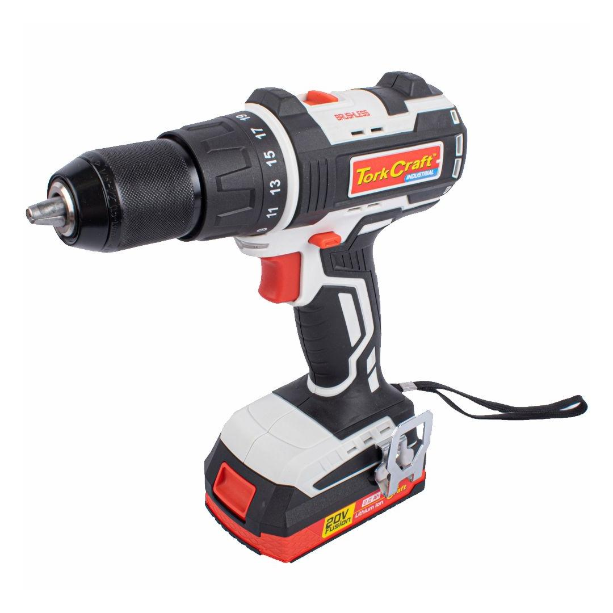
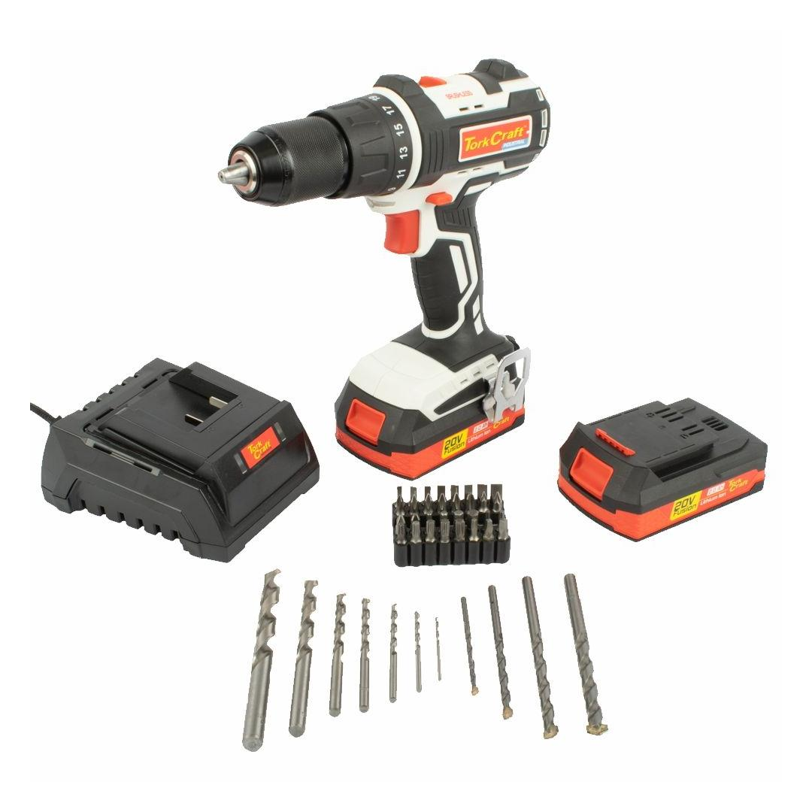
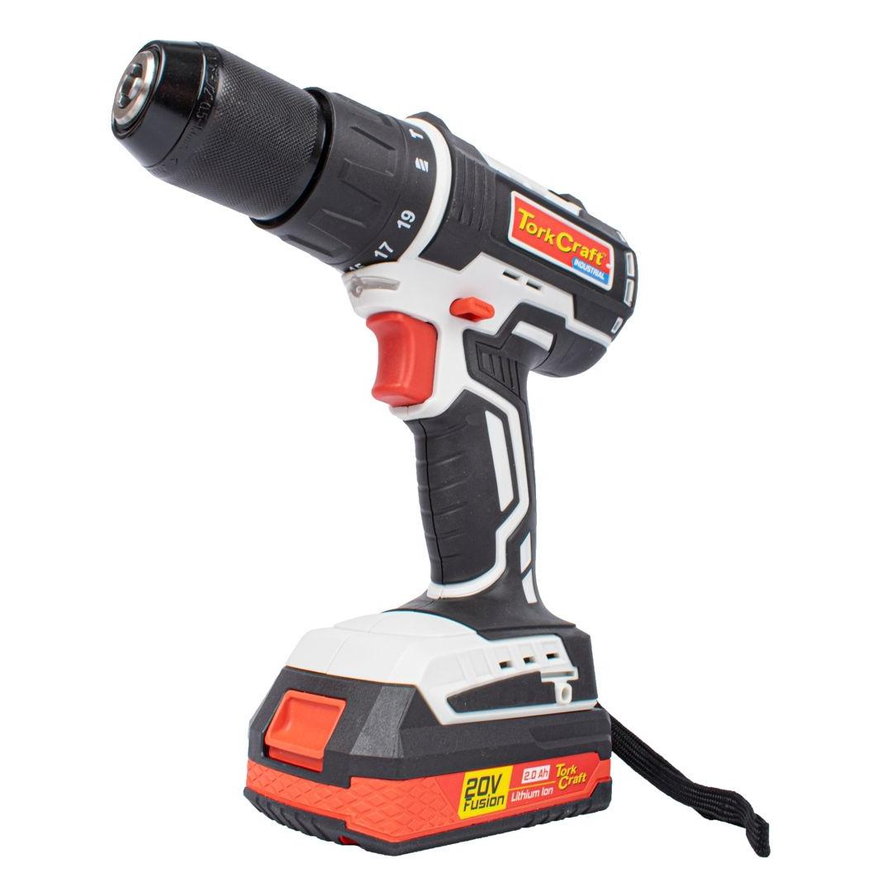
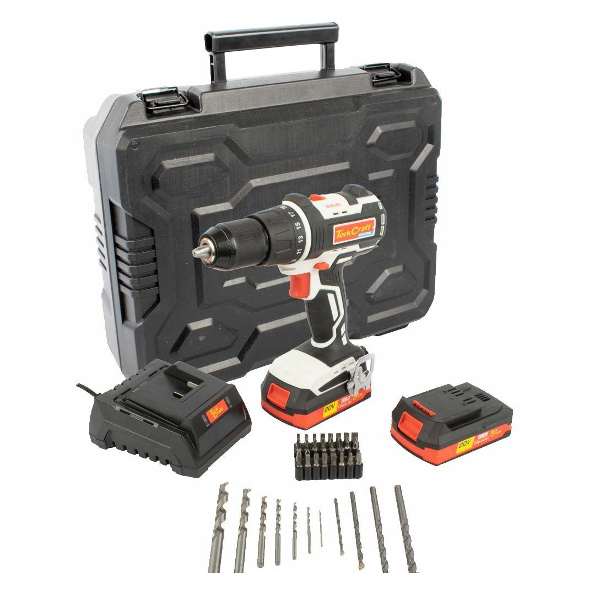
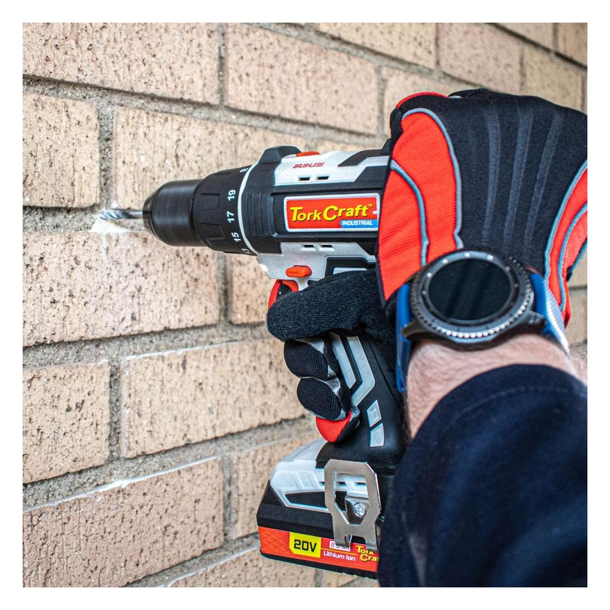

TC20060






The cordless drill is designed with flexibility and durability in mind. The powerful 20V battery delivers performance where it is needed, whether it be drilling, screwdriving, or percussion drilling.
The built-in LED worklight illuminates the work surface for greater accuracy and the direction of rotation is easily changed with a flick of a switch behind the trigger.
The brushless motor allows for: